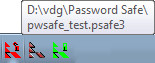

Die Taskleiste erlaubt einen schnellen Zugriff auf zuletzt verwendete Einträge (wenn die Datenbank frei geschaltet ist) und
zum Freischalten der Datenbank, wenn diese gesperrt ist. Es kann auch dazu verwendet werden das Hauptfenster von PasswordSafe
zu minimieren, oder es wieder herzustellen wenn es minimiert war, aber nicht gesperrt.
Databank ID setzen
Wenn sie regelmäßig mehrere Datenbanken offen haben, können sie eine eindeutige vorläufige ID (eine Nummer zwischen 1 und 99)
festlegen, die in dem Symbol in der Taskleiste eingeblendet wird. Wenn Sie eine ID von Null festlegen, wird die Nummer wieder ausgeblendet.
Einmal gesetzt, ist die ID reserviert für eine geöffnete Datenbank, solange bis die Datenbank geschlossen wird oder eine neue ID
zugewiesen wird. Zusätzlich wird im Kurzinfo der Taskleiste die ID dem Datenbanknamen vorangestellt.
Bemerkungen:
Die ID ist nur ein visueller Indikator. PasswordSafe speichert sie nicht oder benutzt sie in irgendeiner Form.
Eine ID kann nur einer geöffneten Datenbank zugewiesen werden. Wenn die Datenbank geschlossen wird, ist die ID wieder frei
und kann einer anderen Datenbank zugewiesen werden.
Dieselbe ID kann nicht an mehr als eine geöffnete Datenbank zugewiesen werden.
Die ID kann nur geändert werden wenn die Datenbank nicht gesperrt ist.
Die Zuweisung einer ID an einer Datenbank bleibt nicht erhalten, wenn die Datenbank geschlossen wird.
Die ID muss bei Wiedereröffnen der Datenbank deshalb erneut zugewiesen werden (wenn es notwendig wäre).
Weil sich die Farbe der Taskleiste über die verschiedenen Versionen von Windows ändert, können sie die Farbe
vom Text für die beste Darstellung am jeweiligen System einstellen.
Wenn die Datenbank gesperrt ist, wird der Datenbankname in der Kurzinfo in eckigen Klammern angezeigt, wie unten gezeigt.

Andere Datenbank öffnen
Dies ermöglicht Ihnen eine andere Datenbank auszuwählen, die anstelle der aktuell geöffneten (oder gesperrten) Datenbank
in der aktuellen Instanz des Programms geöffnet werden soll.
Dies ist praktisch, wenn Sie zwischen Datenbanken wechseln möchten, ohne eine weitere Instanz des Programms zu starten.